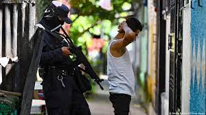
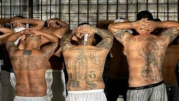

El Salvador cierra 2022 con régimen de excepción y baja en la cifra oficial de homicidios
 En marzo se cumplirá un año de la entrada en vigor del régimen de excepción en El Salvador, una medida que a la fecha ha dejado más de 60.000 personas detenidas, según las autoridades. La mayor parte permanece en detención provisional por orden de un juez y a la espera de un juicio en el que se determinará su culpabilidad o inocencia. Entre esos miles de detenidos están dos de los cinco hijos de Rafael Ruiz y Norma Díaz. Irvin Antonio Ruiz, de 31 años, fue el primero en ser arrestado por la Policía, dicen sus padres a CNN. Agregan que esto ocurrió el 25 de abril, cuando regresaba a casa en motocicleta. Las autoridades lo acusan de tener vínculos con pandillas.
La inversión de El Salvador en bitcoin ha caído en poco más de US$ 67 millones
El valor del bitcoin superaba este viernes los US$ 16.000 por cada moneda, según el sitio CoinMarketCap, después de que el miércoles descendiera hasta los US$ 15.682, el precio más bajo desde que en noviembre de 2021 alcanzara los US$ 65.000. En El Salvador, el bitcoin es moneda de curso legal, junto al dólar, desde el 7 de septiembre de 2021. Desde esa fecha, el Gobierno del presidente Nayib Bukele ha invertido más de US$ 107 millones para comprar 2.381 bitcoin en diferentes momentos a un promedio de US$ 45.000, de acuerdo con el sitio Nayibtracker.com, un portal de seguimiento que mide y registra las compras anunciadas por Bukele en su cuenta de Twitter. Según ese sitio, con el valor del bitcoin de este viernes, la inversión de El Salvador ha caído en poco más de US$ 67 millones.